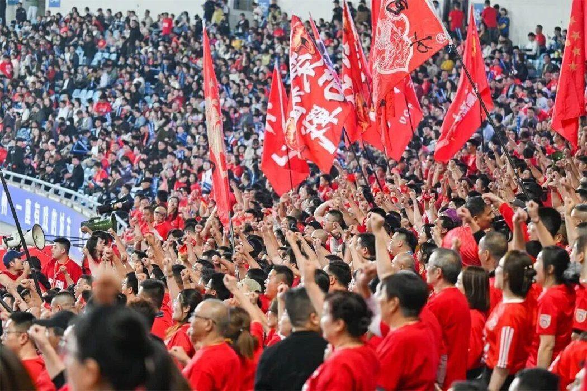
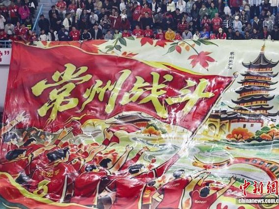
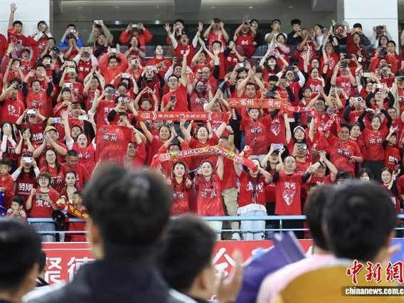

03 · 球迷
红色看台
球场上穿红色的是常州队，看台上穿红色的也是。 这支球队的性格，很多时候是看台给的。

从连败里长出来
他们不是夺冠那天才来的
常州队的球迷文化不是在夺冠那天形成的，而是在输球最多的那段时间。 2025 年球队垫底时，有人在论坛里发长帖鼓劲；球队去客场，也有人跟着坐车去。
比赛日的奥体周边，穿红色球衣的人聚在一起，赛前聊战术，赛后复盘。 连“笔画梗”都被他们玩成了城市乐观精神的一部分——自己先笑出来，别人就笑不到你头上。
到了 2026 年，看台越来越大。常州把 8 个主场排成 8 个周末， 全城设了 30 多处“第二观赛点”，把文化街区、城市公园和商圈都变成了看球的地方。

一块横幅
待到山花烂漫时
2025 赛季最后一场主场比赛，奥体中心的看台上展开过一块巨大的 Tifo， 上面写着“待到山花烂漫时”。那是球迷对下一个赛季的期待。
一年之后，这个期待实现了：2026 年 4 月 11 日，苏超揭幕战放在常州， 看台上挂出的横幅变成了“最是橙黄橘绿时”。球队也真的走到了决赛。
球迷并不要求每年都拿冠军。他们的说法很实在： 不要求一直赢，但希望每年都往前走一点。
看台
红色，是一整片方阵


两年加起来，苏超决赛的看台一次比一次满。2026 年比上一届多出 27 个人， 数字不大，但它意味着纪录又被改了一次。而在球场之外，常州还有 30 多个第二观赛点， 有人没能抢到票，就在商场的屏幕前站着看完九十分钟。